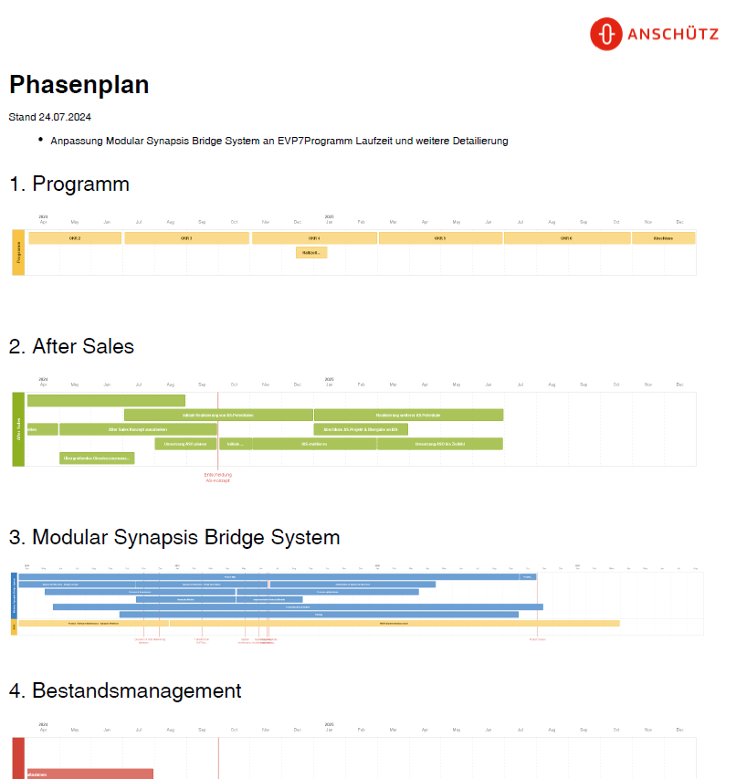
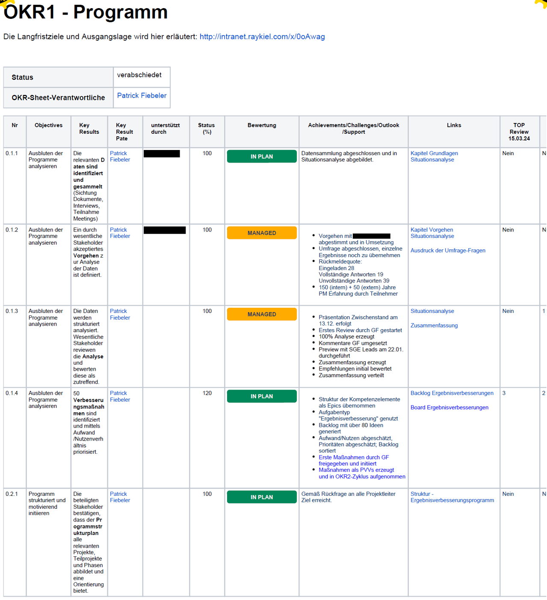
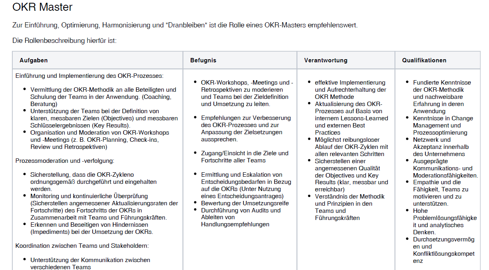
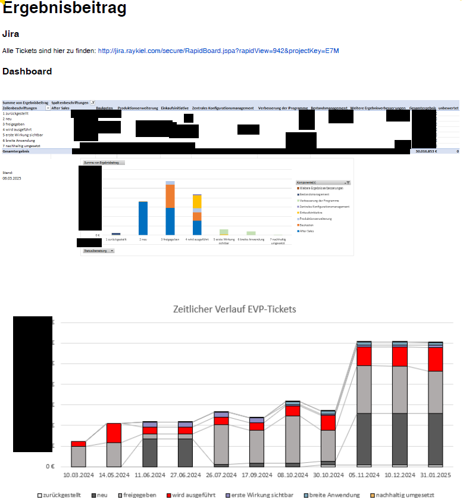
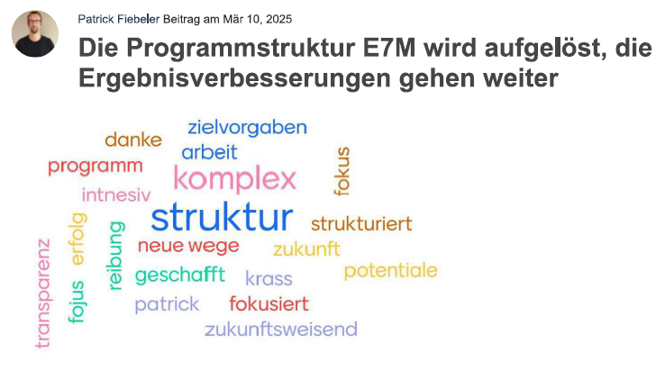

Auszeichnung mit Project Management Excellence Award IPMA
Vorstellung des Siegers des Projektmanagement Awards der IPMA in der Kategorie small-/medium-sizes projects Change Management / Product Development / Marketing 2025
Aufzeichnung der Infoveranstaltung

Über den PM Award
Der PM Award der IPMA (International Project Management Association) ist eine internationale Auszeichnung für herausragendes Projektmanagement. Er würdigt Projekte und Organisationen, die durch exzellente Planung, Steuerung und Umsetzung einen besonderen Mehrwert geschaffen haben. Dabei stehen sowohl die erreichten Ergebnisse als auch die angewandten Methoden, Innovationskraft und Nachhaltigkeit im Vordergrund. Der Preis hebt Best Practices hervor und macht Projekte sichtbar, die nicht nur erfolgreich abgeschlossen wurden, sondern auch beispielhaft für Professionalität und Wirkung stehen.
Über das ausgezeichnete Projekt
Im Jahr 2023 wurde bei der Firma Anschütz GmbH ein internes Programm zur Gewinnsteigerung gestartet. Das Hauptziel bestand darin, mehrere Projekte umzusetzen, die spätestens drei Jahre nach Programmstart zu einer EBIT-Steigerung von 5 % pro Jahr führen sollten. Dabei sollten alle möglichen Methoden zur Gewinnverbesserung eingesetzt werden – mit Ausnahme des Personalabbaus. Für den Aufbau des Programmes und die Leitung wurde Projektmanagement mit Tiefe beauftragt. Zentral bei der Steuerung des Programmes war die Einführung der OKR-Methode. Innerhalb dieses Rahmens wurden bis zu zehn verschiedene Projekte durchgeführt bzw. laufen teilweise noch. Die erzielten Gewinnverbesserungen wurden in Volumen und Reifegrad gemessen, in Jira nachverfolgt und das gesetzte Ziel wurde erreicht.
Projekt oder Programm
Die Aufgabe entsprach der klassischen Definition eines Programmes. Das übergeordnete Ziel war eine Steigerung des EBIT in einem gesetzten zeitlichen Rahmen. Diverse Projekte liefen bereits und wurden neu strukturiert. Weitere Projekte wurden initiiert und gestartet. Einige Projekte wurden abgeschlossen, einige/wenige bestehen auch nach Abschluss des Programmes. Folglich wurde das Vorhaben „Ergebnisverbesserungsprogramm“ (EVP) genannt.
Kontext
Der Kontext des EVP lässt sich wie folgt beschreiben: Während der COVID-Zeit startete Anschütz ein Transformationsprogramm und durchlief eine herausfordernde Geschäftsphase. Die Muttergesellschaft Raytheon entschied, sich von Anschütz zu trennen und begann mit der Suche nach neuen Eigentümern. Etwa ein Jahr lang war das Unternehmen durch diese Suche von Unsicherheit geprägt. Zur Freude auch der Mitarbeitenden konnte schließlich ein regionaler Unternehmer gefunden werden, der Anschütz übernahm. Im Gegensatz zum vorherigen Mutterkonzern Raytheon handelt es sich beim neuen Eigentümer um eine Privatunternehmer. Alle zuvor zentral gesteuerten Konzernfunktionen mussten nun eigenständig innerhalb von Anschütz aufgebaut werden.
Darüber hinaus bestand vor der Übernahme ein außergewöhnlich hoher Verwaltungs- und Gemeinkostenanteil. Der neue Eigentümer forderte eine Steigerung der Profitabilität. Etwa 50 % dieser Steigerung sollten durch Personalreduzierungen – insbesondere im administrativen Bereich – erreicht werden, die übrigen 50 % durch verschiedene Maßnahmen zur nachhaltigen Steigerung des Ergebnisses. Um diesen zweiten Teil umzusetzen, wurde das EVP initiiert.
Damit war nicht nur der konkrete Beitrag zum finanziellen Ergebnis des Unternehmens ausschlaggebend für den Erfolg des Projekts, sondern das Programm war auch strategisch zentral für die Gestaltung der „neuen Anschütz“. Anschütz musste sich bildlich freischwimmen. Daher wurde als Logo der „Freischwimmer“ in den Unternehmensfarben gewählt.
Phasen
Das Programm hat sich in folgende Phasen eingeteilt:
Phase I:
- Initiierung des Programms
- Strukturierung des Programms und Start der Projekte
- Einführung der OKR-Methode
- Implementierung einer Methode zur Messung des Gewinnsteigerungspotenzials und der Realisierung
- Durchführung einer Situationsanalyse in Kundenprojekten
- Beginn der Umsetzung erster Projektergebnisse
- Durchführung von 2 OKR-Zyklen in jedem Projekt mit hoher Akzeptanz
Phase II:
- Aufzeigen eines messbaren Gewinnsteigerungspotenzials von mindestens 50 %
- Erreichen wesentlicher Key Results in den Projekten (Produktionsausweitung, Schulung im Projektmanagement, Agile Release Train, After-Sales-Organisation)
- Vorbereitung der Anpassung der Programmstruktur
Phase III:
- Abschluss und Initiierung neuer Projekte
- Beginn der Transition zur Strategieumsetzung und in den „Regelbetrieb“
- Abschluss des Programms und Fortführung verbleibender Aktivitäten in den Projekten
- Weiterführung der Überwachung der Gewinnsteigerungspotenziale

Excellence in „Menschen und Purpose“
Die folgenden Maßnahmen wurden als Beispiele für Exzellenz im Bereich Menschen und Zweck umgesetzt:
- Vorgespräche mit der gesamten Geschäftsführung, Schwerpunkt: Wunsch nach starker Zielorientierung/Fokus
- Vereinbarung eines Projektmandats und klare Abgrenzung des Programms (insbesondere im Gegensatz zu einem Personalabbau-Programm)
- Persönliche Interviews
- Identifizierung von Schlüsselfaktoren für den Erfolg mit wesentlichen Stakeholdern
- Bewertung der Veränderungsbereitschaft und Nutzung von Lessons Learned aus früheren Change-Projekten
- Strukturierung / Organigramm des Programms
- Erstellung einer Stakeholderanalyse mit Kommunikationsmatrix
- Regelmäßige Abstimmungen und Nutzung von Phasenplänen
- Regelmäßige Blogbeiträge und Teilnahme am Management-Podcast
- Kick-off-Veranstaltung
- Proaktive, regelmäßige Abstimmung und Einbindung des Betriebsrats
Darüber hinaus führten Schulungen, Vorbildfunktion und die Umsetzung der OKR-Methode regelmäßig zu:
- Planung/Entwicklung von Objectives und Key Results
- Überwachung des Fortschritts von Objectives und Key Results
- Durchführung von Reviews und Retrospektiven zu Objectives und Key Results
- Dokumentation von Objectives und Key Results
- Transparente Anpassung von Objectives und Key Results (z. B. Verschiebungen)
- Regelmäßige Retrospektiven, auch gemeinsam mit dem Auftraggeber
- Abstimmung und Vereinbarung von Projektmandaten mit Fokus auf Objectives


Excellence in „Prozessen & Ressourcen“
Die folgenden Maßnahmen wurden als Beispiele für Exzellenz in Prozessen & Ressourcen umgesetzt:
- Retrospektiven
- Phasenpläne
- Ergebnisbeiträge mit Cockpit und Reifegraden
- Entscheidungsvorlagen
- Maßnahmenverfolgung
- Abschlussbericht
Excellence in “Projektergebnissen”
Die folgenden Maßnahmen wurden als Beispiele für Exzellenz in den Projektergebnissen umgesetzt:
- Teilnahme und Freigabe der Ergebnisse durch die Geschäftsführung und Vertreter des Unternehmenseigentümers
- Entscheidung, kein weiteres Potenzial „aufzuzwingen“
- Abschluss und Feier einzelner Projekte:
- After-Sales-Organisation
- Produktionsausweitung: Feier im Maschinenmuseum
- Ein Projekt wurde pausiert und eine Lessons-Learned-Analyse durchgeführt
- Teamzufriedenheit wurde regelmäßig in Retrospektiven erfasst
- Die Teamzufriedenheit bei der Produktionsausweitung war ein zentraler Schwerpunkt
- Hohe Zufriedenheit mit dem Programmmanagement (Referenzschreiben)
- Reifegrad der Potenzialergebnisse wurde deutlich gesteigert, gewünschtes Potenzial identifiziert
- OKR-Methode über das Programm hinaus eingeführt
- Projekt „Programmverbesserungen“:
- Einführung eines Risk Director
- Stärkung von Quality Gates
- Verbesserungen im Entscheidungsprozess
- Erste Welle der Projektmanagement-Zertifizierung

Fazit
Mit der Auszeichnung der IPMA für exzellentes Projektmanagement beim Ergebnisverbesserungsprogramm bei Anschütz wurde erneut Tiefe bewiesen.
Sind auch Sie klar zum Abtauchen?

Kontaktieren Sie mich
Lassen Sie uns unverbindlich kennenlernen und austauschen – zu Ihrer Herausforderung und ersten Ideen zum Supporting.